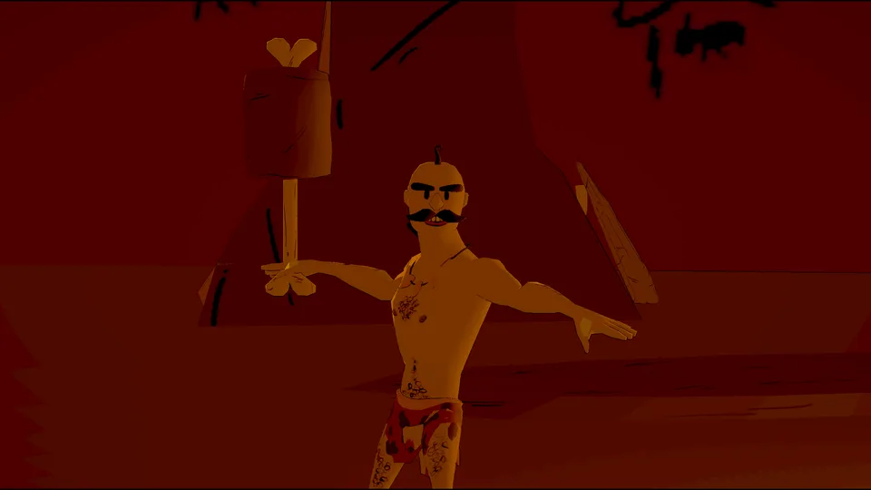
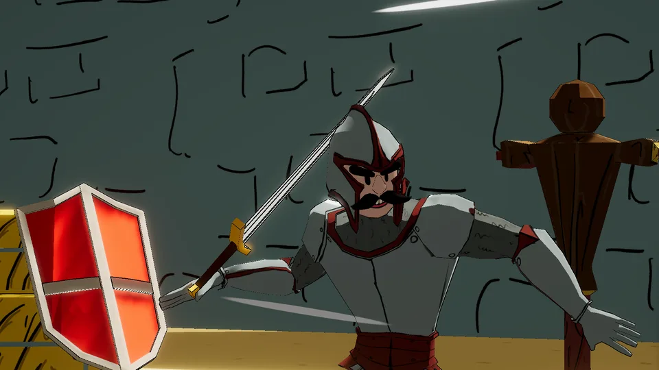
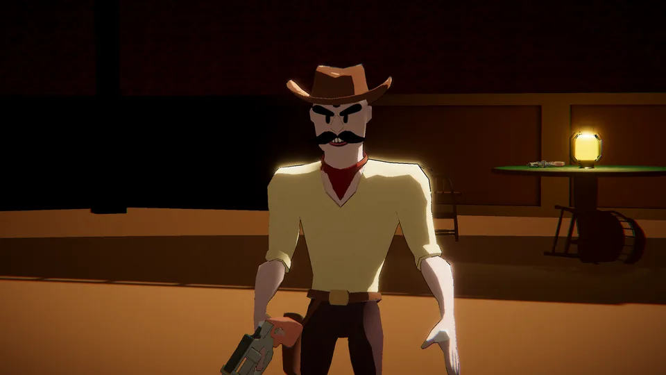
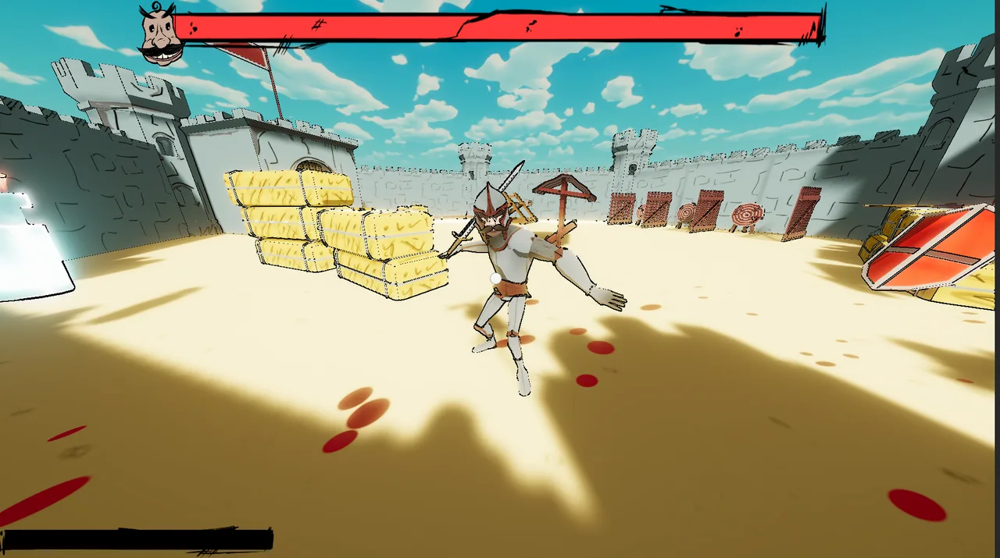
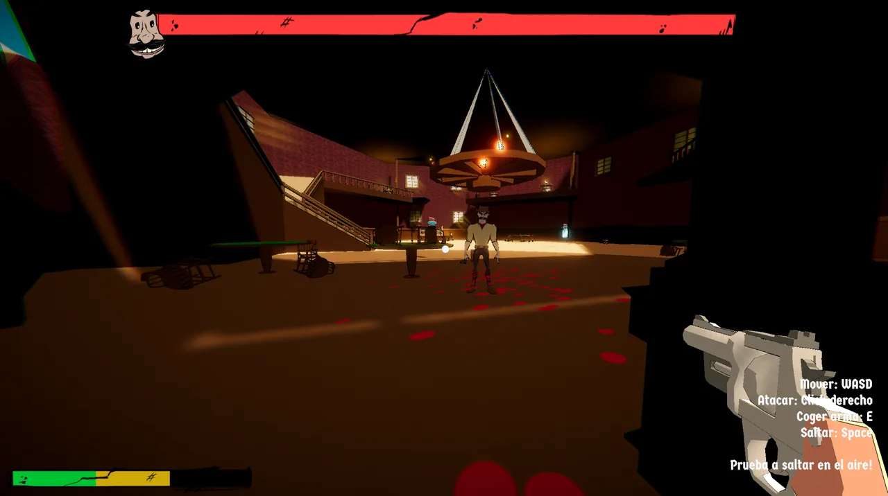
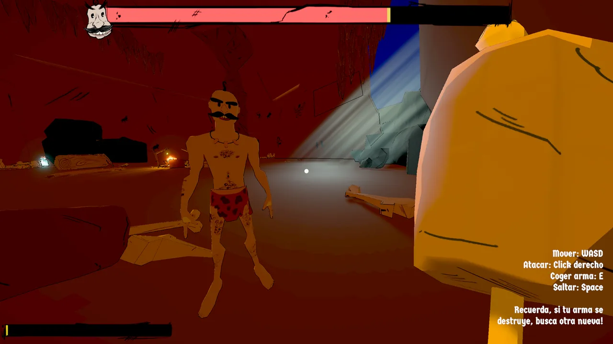

That Goddamn Face!
Un juego en primera persona hecho para la UJI Game Jam 2026, cuyo tema era “Un solo enemigo”. Te enfrentas al mismo hombre en tres épocas: una cueva prehistórica, un castillo medieval y un salón del Lejano Oeste.
Se reproduce desde YouTube. No se carga nada hasta que pulsas.
- Mi rol
- Personajes 3D y animación
- Equipo
- 6 personas
- Hecho con
- Unity, Blender, Mixamo
- Resultado
- Ganador de la jam
Un enemigo, tres épocas
El tema pedía un único enemigo, así que lo convertimos en todo el juego: vuelve una y otra vez a lo largo de la historia, y tú con él. Modelé todas sus versiones en Blender, cada una con el mismo bigote inconfundible, y adapté animaciones de Mixamo al juego.
pasa el ratón por encima para verlo moverse



En el juego



Resultados
- Ganamos la UJI Game Jam 2026.